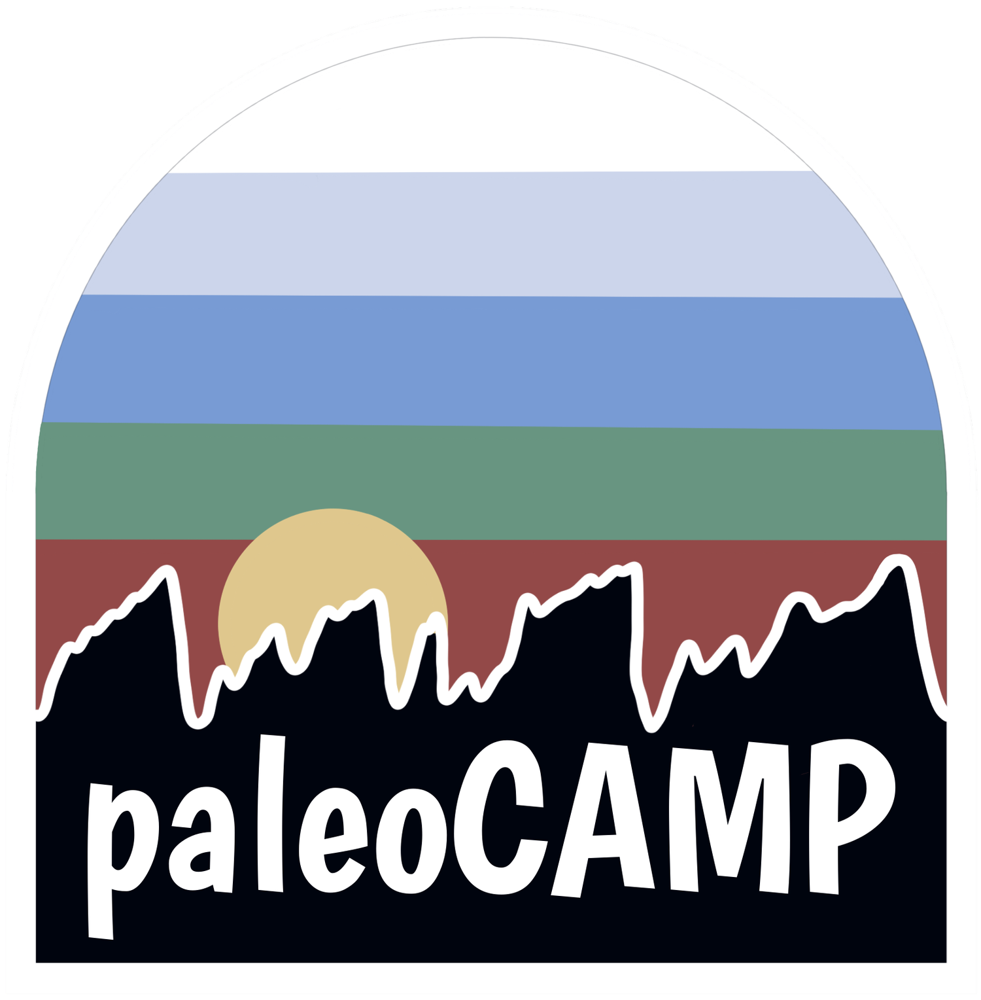

Climate Modeling Tutorial at the 2024 paleoCAMP#
June 18–July 1, 2024
Jiang Zhu
jiangzhu@ucar.edu
Climate & Global Dynamics Laboratory
NSF National Center for Atmospheric Research
Prerequisites#
The following notebooks contain very simple introdution to Unix, Python, Jupyter, and NCAR resources and access.
0_Prerequisites_1_unix.ipynb
0_Prerequisites_2_python_jupyter.ipynb
0_Prerequisites_3_ncar_account_jupyterhub.ipynb
Overall learning objectives#
Know basic structure of CESM as a software
Learn to set up and validate simple experiments with CESM
Learn to use Python/Jupyter Nobebooks for analyzing and visualizing model output in netcdf, and for assessing model-data agreement.
Three main modules#
An introduction to CESM
Exercises on running CESM preindustrial control and mid-Holocene simulations
Exercises on analyzing CESM output with NCAR JupyterHub
Optional advanced modules#
An example on how to set up more complicated paleoclimate simulation (CESM2-PaleoCalibr LGM)
Examples on how to use available simulations and reanalysis data on the NCAR machines